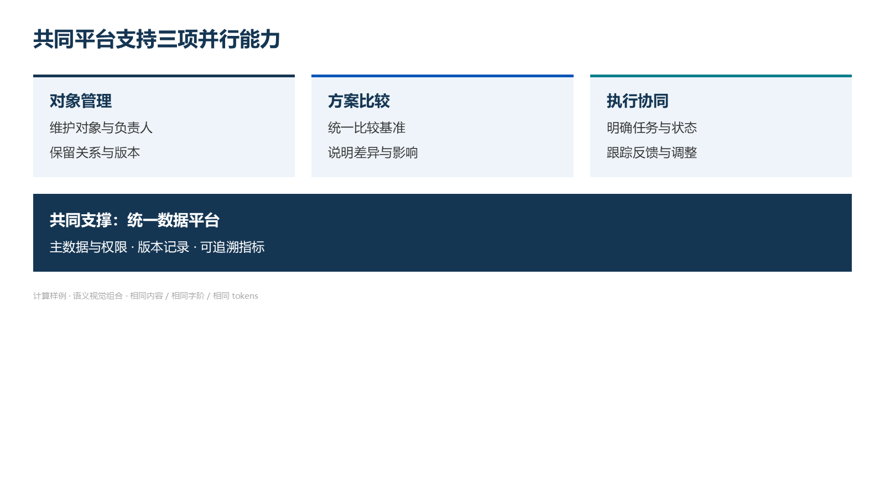
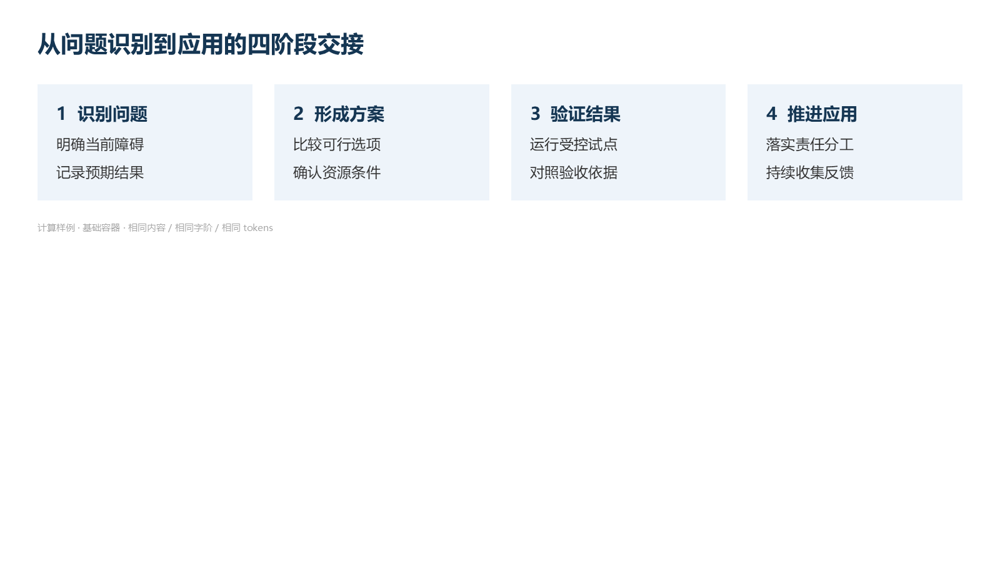
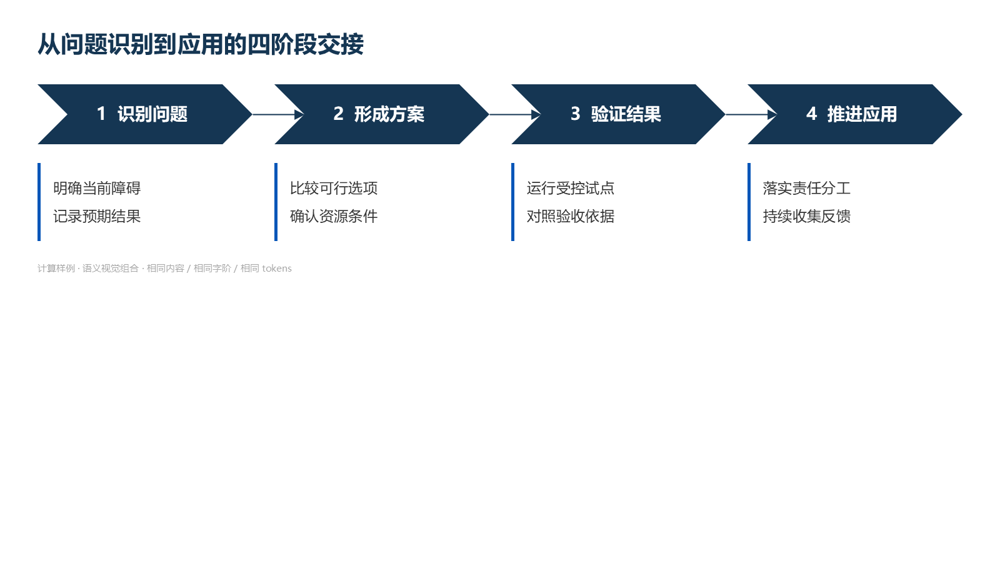
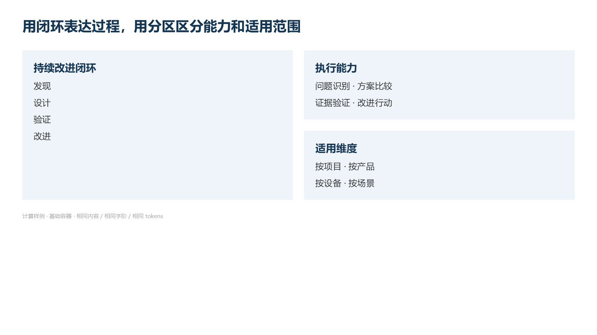
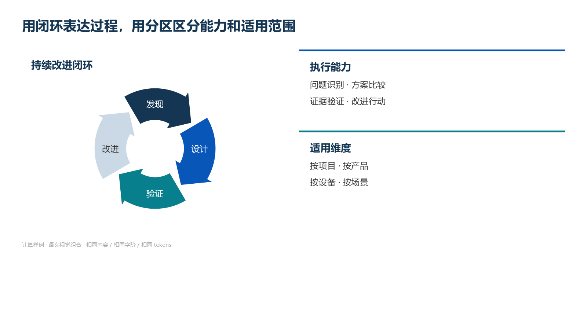
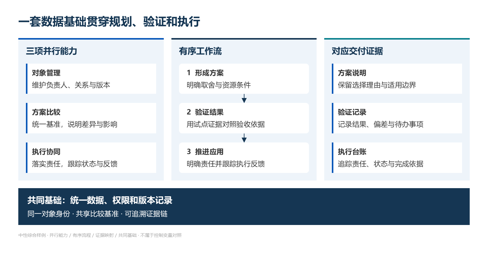

从容器到有语义的视觉组合
三组原创合成对照使用相同标题与正文、字体角色、画布和tokens。差异来自覆盖范围、顺序和分组的计算式表达。页脚对照标签除外；最后一页为独立综合展示。全部沿正常 build --geometry-policy computed 生成并由PowerPoint成图。
01 · 并行能力与共同基础
共同基础占完整三列，以宽度和色带说明共享范围。三项并行能力没有被强行串成流程。
Before · 等规格卡片使共同平台看似第四项能力
After · column_span明确覆盖范围，分区rule标记平行组
02 · 有向阶段交接
用原生chevron、绑定端点的连接线和同轨说明表达顺序。形状和连线都可继续在PowerPoint中编辑。

Before · 顺序主要依赖编号和阅读
After · 显式sequence承载交接，连接位于节点后方03 · 闭环、能力与适用范围
厚曲箭头的轮廓直接形成闭环，保留水平可编辑文字；右侧用开放式说明组和规则线区分执行能力与适用范围。各阶段是定性顺序，不是数值占比。

Before · 闭环以清单表达，分组视觉角色相近
After · arrow-ring计算弧段、箭头与安全文字区04 · 独立综合展示
三轨分别呈现并行能力、工作流和交付证据。共同基础跨完整三列；只在有顺序的工作流内部连接。此页不是前三组控制变量实验的一部分。

Computed · 嵌套容器、规则线、原生连接与共享底座协同
正文14pt、最小9pt、纯色优先。预览为PowerPoint 16.0实际成图；文本、形状与连接保留原生编辑能力。有限column_span不是完整CSS Grid；未实现row_span/subgrid、通用布尔形状、遮罩或任意避障。前三组是局部关系示例，并非完整业务汇报的信息密度验收。